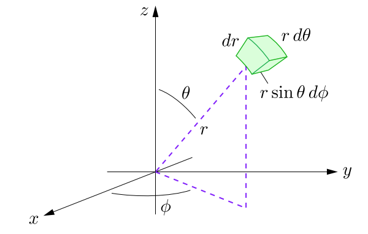

Mathematical Basics¶
The following section assumes the reader knows about the following mathematical constructs:
Calculus, especially multivariable calculus
Linear algebra: basics of vector spaces, eigenvectors and eigenvalues
Real analysis: knowledge of sequences, subsequences and cauchy sequences
Hilbert Space¶
Recapping from vector spaces, a vector space \(X\) is called:
A normed linear space if for every \(f \in X\) there is a real number \(||f||\), called the norm of \(f\), such that
\(||f|| \ge 0\),
\(||f|| = 0 \ \mathrm{iff} \ f = 0\),
\(||cf|| = |c|||f||\) for every scalar c, and
\(||f + g|| \le ||f|| + ||g||\) (Triangle Inequality)
An inner product space if for every \(f, g \in X\) there exists a complex number \(\langle f, g \rangle\) called the inner product of f and g, such that
\(\langle f, f \rangle\) is real and greater than zero,
\(\langle f, f \rangle = 0\) if and only if \(f = 0\),
\(\langle g, f \rangle = \langle f, g \rangle^*\),
\(\langle af_1 + bf_2, g\rangle = a\langle f_1,g \rangle + b\langle f_2, g \rangle\)
Note that every inner product space is a normed linear space, as each inner product determines a norm by the formula \(||f|| = \langle f, f \rangle ^{1/2}\).
As an example, consider the vector space \(\Bbb{R}^2\). This vector space has two basis vectors, \(\hat i\) and \(\hat j\). The norm of any vector \(\pmb{r_1} = a\hat i + b\hat j\) is defined as \(\sqrt{a^2 + b^2}\), and the inner product with another vector \(\pmb{r_2} = c\hat i + d\hat j\) i.e. \(\langle \pmb{r_1}, \pmb{r_2} \rangle\) is defined as the dot product, which is \(ac + bd\).
Another important concept in vector spaces is that of completeness. If any convergent sequence is also a cauchy sequence in a vector space \(X\), then \(X\) is said to be complete
We now come to the definition of Banach and Hilbert spaces: A complete normed linear space is called a Banach Space, and A Banach space whose norm is determined by an inner product is called a Hilber space
If the above definitions went over your head, don’t worry. All you need to know about hilbert spaces is that they are vector spaces equipped with an inner product, and they are also complete, which allows us to use calculus techniques on functions defined here. Hilbert spaces are key to quantum mechanics as they support an infinite number of basis vectors, and also allow the definition of functions on the space, thereby acting as function spaces as well.
In quantum mechanics, all wavefunctions reside in the hilbert space
Dirac (Bra-Ket) Notation¶
Dirac notation is an effective way of representing states and operations in vector space. It consists of a Bra \(\bra{a}\), which is a map from \(V \to \Bbb{C}\), and a Ket \(\ket{b}\), which, as discussed previously is just a vector. As a concrete example, consider
and consider
Then in dirac notation, we can define \(\braket{a}{b}\) as
Note that every vector \(\ket{b}\) has a corresponding dual bra \(\bra{b}\), which is defined as
This is true, as by the definition of an inner product space \(\braket{b}{b} = ||b||^2\), and \(\braket{b}{b} = ||b_1||^2 + ||b_2||^2 + ... + ||b_n||^2 = ||b||^2\).
This definition leads to some interesting formulae: for example,
and also allows the working of operators, which are more like transformations
The question that arises now is why don’t we just use linear algebra constructs in quantum mechanics instead of getting into Hilbert spaces? The answer to that question arises when we use probability distribution functions to describe the state of the system rather than the system being in a finite number of discrete states. This is useful, as the inner product for such functions is defined in the hilbert space as follows:
where \(d\tau\) is the appropriate volume element.
Since hilbert spaces also include vector spaces with a finite number of basis vectors, we can use both matrices and hilbert space constructs while dealing with problems of this sort. The two-state system discussed previously is mainly dealt with using matrices, as you would have found out if you would have visited the Wikipedia page.
Expected Values¶
Deviating from hardcore quantum mechanics into statistics, the expected value of a variable \(x\) whose distribution is governed by a probability distribution function \(P(x)\) is defined by
In general, the expected value of any function of \(x\), \(Q(x)\) is defined as
If the probability distribution function is continuous rather than discrete, then the expected value becomes
Back to quantum mechanics, by the born interpretation of the wavefunction, the probability distribution function is given by \(|\psi|^2\). Thus, if we want to find the expected value of an observable, suppose the expected value of the x-position or the expected value of energy, then we ‘sandwich’ the operator between \(\psi^*\) and \(\psi\) and integrate over the domain. This ‘sandwich’ operation has a nice notation in bra-ket form, as shown below: if \(X\) is an observable whose operator is \(\hat{X}\), then
Calculus Recap¶
A quick refresher if your multivariable calculus is weak (like mine): the volume element varies on changing the coordinates. If we are integrating in spherical coordinates, then the volume element is \(r^2 \sin \theta dr d\theta d\phi\), as shown by this diagram (credits: Daniel V Schroeder)
Also, given a radial wavefunction \(R(r)\) which is spherically symmetric, such as a \(\mathrm{1s}\) orbital, the probability distribution function is \(r^2 (R(r))^2\) and NOT \(4\pi r^2 (R(r))^2\). This is by definition; the \(R(r)\) wavefunction is normalized by setting \(\int_0^{\infty} r^2(R(r))^2 dr\) to \(1\) and finding the normalization constant. The \(4\pi\) factor comes in ONLY if you’re doing the integration on \(\psi(x)\) rather than \(R(x)\), so be careful here.
Another small tidbit is finding the most probable value of a variable: note that this is NOT equal to the expected value. The most probable value is found by finding the maxima of the probability distribution curve; basically taking it’s derivative and equating it to zero. This is also a source of confusion, as the most probable value of \(r\) for the \(\mathrm{1s}\) orbital is \(a_0\), whereas the expected value is \(1.5 a_0\).
Linear algebra and the Hilbert space¶
If you’ve been following me so far and are conversent with linear algebra, you must have figured out the etymology of eigenfunctions and eigenvalues; for the uninformed, if we have a square matrix \(A\) and a column vector \(X\) such that \(AX = \lambda X\), where \(\lambda\) is a scalar, then \(X\) is called the eigenvector of \(A\), and \(\lambda\) is called the eigenvalue of \(A\). Due to the infiniteness of the hilbert space, the eigenvector is called the eigenfunction in hilbert space.
Orthogonality is another concept borrowed over from Linear Algebra: two matrices \(A\) and \(B\) are mutually orthogonal if \(A^T B = 0\). In quantum mechanics, we say that two wavefunctions \(\psi_i\) and \(\psi_j\) are orthogonal if
Another concept borrowed from Linear algebra is Hermiticity: for any arbitrary complex valued vector \(v\) and a hermitian matrix \(A\), we have \(v^H A v = (v^H A v)^H\), that is the given product is real. This also extends to quantum mechanics, as discussed in the previous section. Also, by the spectral theorem, hermitian matrices have real eigenvalues and orthogonal eigenvectors. These properties also extend over to quantum mechanics.
This much math provides a firm foundation for what is to follow. Other math concepts will be explained as and when they are required, or will be covered in an appendix/addendum. Note that we don’t need much rigorousness in the math we will use: math is to be used as a tool to solve quantum mechanical problems, and we should not get convoluted in the folds of mathematical rigour when using it as a tool.